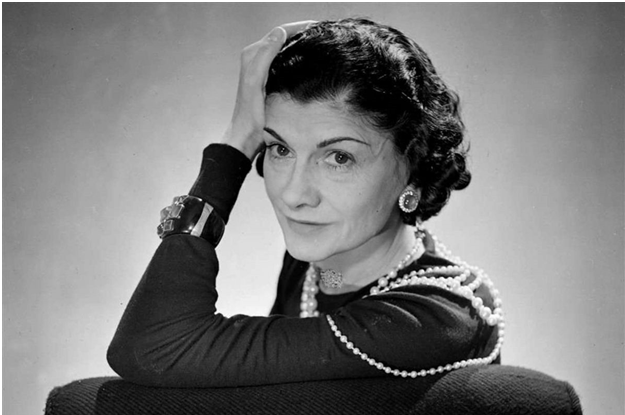

Дизайн
Твоя ідеальна професія може бути пов’язана з дизайном стилю та зачіски. Ти креативний, комунікабельний, працьовитий, маєш гарні уяву та естетичний смак, володієш чудовим відчуттям стилю та мрієш привнести у світ щось нове, гарно поєднуєш речі, які багатьом на перший погляд здаються несумісними.
В майбутньому ти можеш стати як Коко Шанель, яку по праву вважають найважливішою фігурою в історії моди XX століття. Шанель принесла в жіночу моду приталений жакет і маленьку чорну сукню, під її керівництвом було створено всесвітньо відомі парфуми «Chanel № 5». Вплив Коко на високу моду був такий сильний, що її — єдину з історії моди — журнал «Тime» вніс до списку ста найвпливовіших людей XX століття.
Цікавий факт! Саме Коко Шанель запровадила моду на засмагу. Це сталось на початку 1920-х рр., коли вона повернулась із відпочинку на яхті із золотаво–бронзовою шкірою. Доти взірцевою була порцеляново біла шкіра.
Дану професію ти можеш опанувати обравши навчання у ЧДБК за освітньою програмою «Дизайн стилю та зачіски».